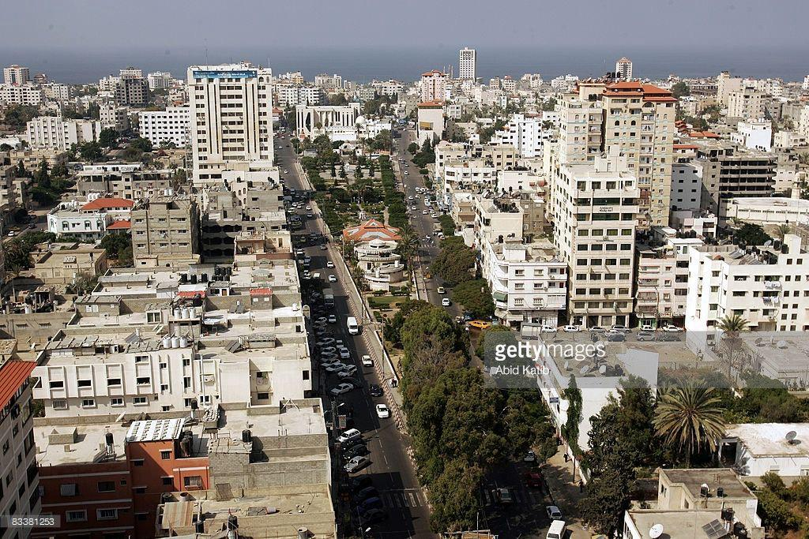
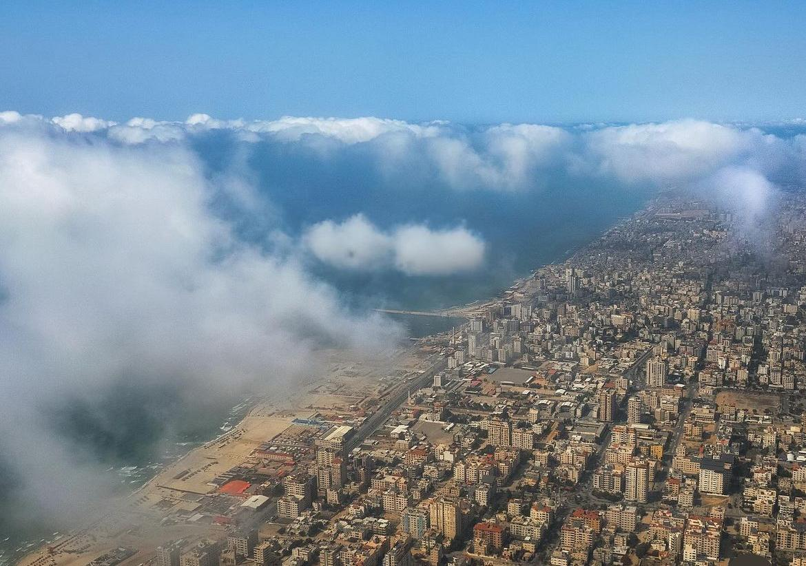
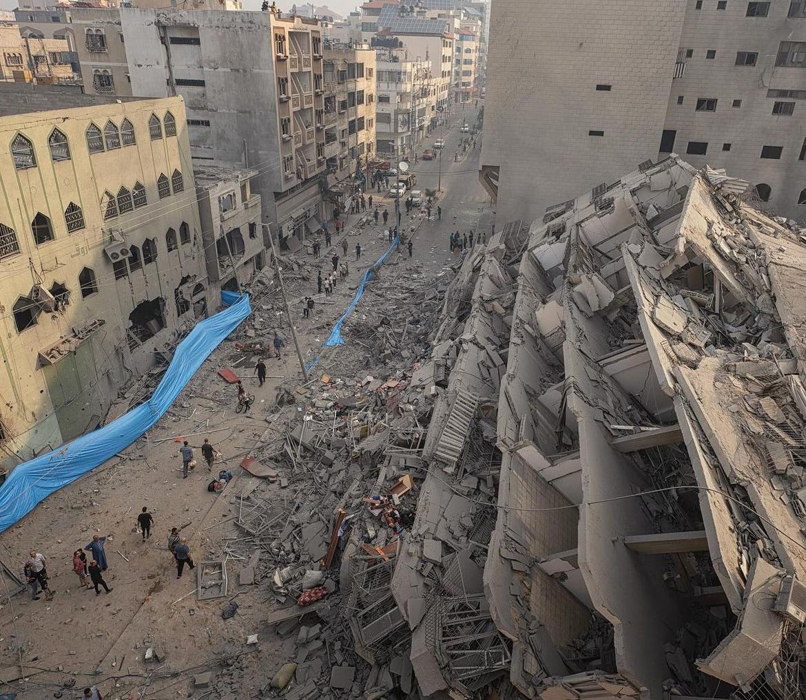
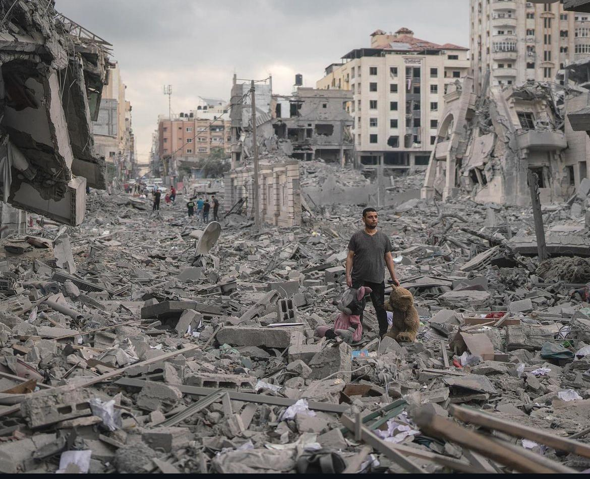

before the war
- Gaza had basic but functioning infrastructure, including housing, schools, hospitals, and utilities.
- Gaza's economy was struggling due to a blockade, high unemployment rates, and limited resources. However, there was still some economic activity with local businesses and agriculture.
- Healthcare facilities were operational but under-resourced. There were challenges in accessing advanced medical care and medicines.
- Educational institutions were functioning, though they faced issues such as overcrowding and limited resources.
picture for gaza city before the war
 Caution : you can click on the pictures
after the war
- Wars and conflicts have resulted in significant destruction of infrastructure. Many homes, schools, and hospitals have been damaged or destroyed, leading to a housing crisis and inadequate medical facilities.
- The economy has worsened significantly. Many businesses have been destroyed, unemployment has increased, and there are severe shortages of essential goods and services.
- Healthcare infrastructure has been heavily damaged. There is a critical shortage of medical supplies, and the capacity to treat patients, especially those with war-related injuries, is severely limited.
- Many schools have been damaged or destroyed, disrupting education for thousands of children. The trauma of conflict also affects the ability of students to learn and teachers to teach.
Some pictures that describe some of the suffering of the people of Gaza
 Caution : you can click on the pictures